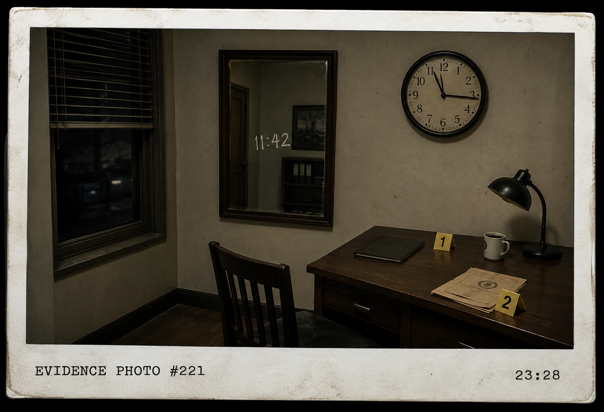

BLUE / EVIDENCE
CASE B-04 / PHOTO-FORENSICS
⚠ الصورة الموجودة في هذا الملف ليست نسخة أصلية.
لا تثق بكل ما تراه.
[ وثيقة 1 ] — تقرير مسرح الجريمة
تم العثور على صورة Polaroid
داخل منزل المشتبه به.
تم التأكد من أن الصورة التُقطت
بعد وصول الشرطة مباشرة.
وقت دخول أول ضابط: 23:17
وقت التقاط الصورة: 23:28
ملاحظة المحقق:
"الصورة تبدو طبيعية..."
"...لكن أحد الأرقام الظاهرة فيها
لا ينتمي إلى المشهد."
[ وثيقة 2 ] — Evidence Photograph

EVIDENCE PHOTO #221 —
CRIME SCENE / 23:28
الصورة تحتوي على أكثر من دليل.
افحص الوقت، الانعكاس،
والأشياء الموجودة في الغرفة.
[ وثيقة 3 ] — ملاحظات المصور الجنائي
ملاحظة A
الساعة الموجودة على الحائط
تشير إلى 11:15 تقريبًا.
ملاحظة B
وقت الصورة موثق عند 23:28،
أي بعد دخول الشرطة بـ 11 دقيقة.
ملاحظة C
لا توجد ساعة ثانية داخل الغرفة،
لكن المرآة تُظهر الرقم 11:42.
ملاحظة D
لا يوجد أي جسم في المرآة
يمكن أن يفسر ظهور 11:42.
[ وثيقة 4 ] — ملاحظة مجهولة
"لا تبحث عن الوقت الصحيح..."
"ابحث عن الشيء الذي لا يمكن
أن يكون انعكاسًا حقيقيًا."
"إذا ظهر رقم داخل المرآة..."
"فأين الساعة التي يفترض أن تعكسه؟"
ثم جملة مكتوبة بقلم مختلف:
"الانعكاس يعكس شيئًا موجودًا."
"وليس رقمًا ظهر من العدم." "
[ وثيقة 5 ] — رمز الصورة
|
العنصر
|
القيمة
|
المعنى
|
|
الساعة
|
11:15
|
وقت ظاهر على الساعة
|
|
وقت الصورة
|
23:28
|
وقت موثق
|
|
الفرق
|
11 دقيقة
|
زمن الوصول → التصوير
|
|
الرقم الغريب
|
11:42
|
لا يوجد جسم يعكسه
|
آخر سطر:
"حين تعرف الوقت الصحيح،
ستعرف أن الصورة ليست كما تبدو."
🧩 STEP A — PHOTO PASSWORD
استخرج الرقم الذي لا ينتمي إلى المشهد
ثم أدخله بصيغة HHMM.